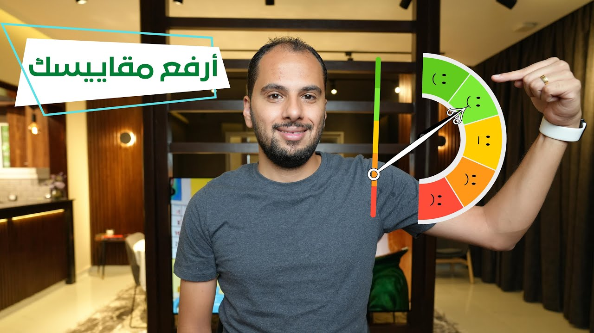

فكرة الصبح
أرفع من مقاييسك - كيف تحصل علي الحد الأقصي من النعم في حياتك؟
«ارضى بقليلك» نصيحة اتربينا عليها، لكن معناها اتشوه لحد ما بقت مبرر للحد الأدنى من كل حاجة. من حكاية أخين في قرية قديمة، مدرس رياضيات وشاعر، بنشوف 3 فروق بتفرّق بين حياة الحد الأدنى وحياة الحد الأقصى من النعم.

شغّل الحلقة«ارضى بقليلك» واحدة من النصايح الكلاسيكية اللي كلنا اتربينا عليها. لكن للأسف معناها اتشوه في عقولنا لدرجة إنها بقت بتعبّر عن عدم السعي: إني أرضى بأي حاجة قليلة في حياتي وما احاولش أزودها أو أغيرها. أرضى بجودة حياة ضعيفة بحجة إن ده قليلي اللي مكتوب لي، أو ترضى بأي وظيفة وخلاص وتقول «هو ده المتاح لي» وما تحاولش تسعى للأفضل، أو ترضي بعريس فيه كتير من العيوب بحجة إن العريس المثالي مستحيل ييجي.
والأكتر من كده إننا بقينا لما نيجي نخطط لمستقبلنا، بنحط الحد الأدنى من كل حاجة، لغاية ما بقينا عايشين في الحد الأدنى من الحياة. وفي الناحية التانية فيه عدد قليل من الناس قرروا يرفعوا من مقاييسهم ويسعوا نحو الحد الأقصى من النعم. ودول اللي هنتكلم عنهم هنا، علشان نتعلم منهم إزاي نرفض الحد الأدنى من كل حاجة ونرفع من مقاييسنا في الحياة.
ليه محتاج أرفع من مقاييسي؟ 1:15
خليني أبدأ بفكرة شايفها حقيقة مهمة: إننا اتخلقنا علشان نعيش حياة فريدة، والحياة الفريدة دي فيها الحد الأقصى من النعم والخيرات. لكن لأسباب كتيرة، أهمها الأفكار المغلوطة واللي نتج عنها أفعال غلط برضه، حياة معظم الناس وصلت إنها تكون ضمن الحد الأدنى من النعم.
علشان كده إحنا محتاجين نغيّر أفكارنا ونرفع من مقاييسنا، وبالتالي نقدر نرفع من جودة الحياة اللي بنعيشها. طب السؤال هنا: يعني إيه أصلًا أرفع مقاييسي؟
حكاية الأخين: مدرس الرياضيات والشاعر 1:40
تعال الأول أحكي لك حكاية. هي حكاية خيالية، لكنها مبنية على أفكار حقيقية.
في واحدة من القرى القديمة كان عايش اتنين إخوات. الأخ الأكبر كان مدرس رياضيات في مدرسة القرية، وشخصيته كانت مناسبة جدًا لمهنته، لأنه كان بيتعامل في حياته بمبدأ «واحد زائد واحد بيساوي اتنين». كل حاجة عنده لازم تدخل فيها الحسابات دي. ولأن كل المعطيات اللي في القرية لا تدعو للتفاؤل، كانت طموحاته قليلة جدًا. وبما إن سقف طموحاته قليل، مجهوده كمان بقى قليل، فبطّل يهتم بجودة شغله، لأن النتيجة بالنسبة له هتكون واحدة ومستحيل تتغير.
حياة الأخ الأكبر كانت عبارة عن كام ساعة في المدرسة، وباقي الوقت بيقضيه في البيت، وده طبعًا أثّر على صحته بشكل سلبي. وكان راضي عن حياته، لأن ما كانش قدامه حاجة يعملها.
أما الأخ الأصغر فكان شاعر، وبرضه شخصيته كانت مناسبة جدًا لمهنته. ومع إن مكانته الاجتماعية ودخله في القرية لا يقارنوا بأخوه الكبير، كان راضي جدًا عن حياته ومستمتع بيها. وفي نفس الوقت كان بيبني قصور في أحلامه للحياة اللي عاوز يعيشها. وده خلاه يشتغل ليل ونهار تقريبًا، في الموالد وعلى القهاوي، وكل يوم كان بيرفع من جودة شعره وطريقة إلقائه، لغاية ما بقت كلماته بيدندنها الناس في البيوت.
وبقى من أشهر الشعراء، مش بس في قريته، لكن في كل القرى المحيطة كمان، وكان بيحضر حفلاته الآلاف من الناس. وده طبعًا خلاه غني جدًا، وقدر يحوّل قصر أحلامه لواقع على أرض قريته.
لو عملنا مقارنة بين الأخين، هنلاقي 3 اختلافات جوهرية: الأول طريقة التفكير، والتاني مفهوم الرضا، والتالت المقاييس.
إزاي طريقة التفكير ممكن تشلّك؟ 3:17
في الحكاية، طريقة تفكير الأخ الأكبر كانت بتمنعه إنه يجتهد، لأنه كان فاكر إن النتيجة مش هتتغير باجتهاده. ولسان حاله بيقول: «إيه اللي هيحصل يعني لو اجتهدت؟ أخرتها هبقى مدرس برضه». أما الأخ الأصغر فمفتاح نجاحه كان في طريقة تفكيره المختلفة، اللي ركّز فيها على أحلامه، وده ادّى له دفعة كبيرة خلته يشتغل ويجتهد، رغم إن شغله في القرية ما كانش بيحظى بنفس مكانة وتقدير مهنة المدرس.
وللأسف فيه كتير مننا بيفكر بنفس التفكير السلبي بتاع الأخ الأكبر. والتفكير ده في النهاية بيمنعنا من استغلال قدراتنا وإمكانياتنا، سواء إمكانيات علمية أو خبرات اكتسبناها أو مهارات شخصية، بحجج كتير زي «إنها ماشية بالواسطة» أو «لازم يكون معايا راس مال كبير علشان أبدأ». طريقة التفكير دي بتشلّك، وبتمنعك من الحركة أو السعي في أي طريق ممكن يكون فيه نجاحك.
فلو بتفكر بالطريقة دي حاول تغيّرها، وركّز دايمًا على الفرص مش المعوقات. وخليك عارف إنك مستحيل تتنبأ بالنتيجة، سواء كانت نجاح أو فشل. إنت بس اعمل اللي عليك، وابذل كل جهد عندك، وربنا هيكلل الجهد ده بنجاح إن شاء الله.
يعني إيه الرضا بجد؟ 4:20
الاختلاف الجوهري التاني بين الأخين هو مفهوم الرضا. الأخ الكبير كان راضي بالأمر الواقع، لكنه ما كانش شاكر أبدًا. كان حاسس دايمًا إنه يستحق أكتر بكتير من اللي هو فيه، وإنه مظلوم بميلاده في قرية فقيرة مش بتقدّر إمكانياته وعلمه. وبالتالي استخسر مجهوده وما حبش يطوّر في نفسه.
وده بصراحة فخ بنقع فيه كلنا: بنفتكر إننا بنطبّق الرضا في حياتنا، وبنقنع نفسنا واللي حوالينا إننا راضيين، مع إن من جوانا عندنا أفكار ومشاعر متمردة على كل حاجة في حياتنا. حاسين إننا مظلومين وحظنا وحش في الدنيا، وأفكار سلبية كتير بتخلي الرضا مجرد كلمة، مش واقع عايشينه.
لكن الرضا في الحقيقة معناه إنك تكون شاكر وراضي بحالك، وعارف إن وضعك الحالي نتيجة لأفكارك وقراراتك وأفعالك في الماضي، وفي نفس الوقت بتسعى لتحسين وضعك وجودة حياتك من خلال تطوير نفسك بكل جهد ممكن. الرضا إنك تكون حاسس بالنعم اللي عندك، من أول الهوا اللي بتتنفسه، مرورًا بالأكل والشرب، ووصولًا لعيلتك وأسرتك.
الرضا إنك تكون ممتن رغم وضعك الصعب، وفي نفس الوقت بتسعى للأفضل دايمًا. وده تقريبًا اللي طبّقه الأخ الأصغر في الحكاية: وضعه ومكانته في القرية كانوا أقل بكتير من أخوه الأكبر، لكنه كان مطبّق الرضا في حياته صح، والرضا مع السعي وصّلوه لنجاح مبهر.
إزاي ترفع مقاييسك في كل حاجة؟ 5:41
الاختلاف الجوهري التالت بين الأخين كان في المقاييس، والاختلاف ده بصراحة ناتج عن الاختلاف في التفكير والاختلاف في مفهوم الرضا. لو ركزت مع الأخ الأكبر، هتلاقي إن مقاييسه ما كانتش مرتفعة خالص. فبالرغم من إنه من جواه غير راضي بالمرة عن حياته، ما حاولش يحسّن من جودتها، لأن مقياس جودة الحياة عنده متدني، وده بسبب أفكاره اللي وقفت كعائق كبير قدام رفع مقاييسه.
لكن الأخ الصغير، مع إن جودة حياته كانت أقل من أخوه، تفكيره كان مختلف وكان فاهم الرضا صح، وبالتالي مقاييسه للحياة اللي عاوز يعيشها كانت مختلفة. وده خلاه يجتهد ويسعى علشان يفضل يرفع من جودة حياته، ومش بس جودة المعيشة، لأ، ده كمان رفع من جودة شغله، واشتغل على نفسه، وطوّر من شخصيته وطريقة إلقائه.
الفكرة هنا إنك تشيل المعوقات اللي في تفكيرك، وتكون راضي فعلًا عن حياتك، وفي نفس الوقت ترفع مقاييسك في كل حاجة في حياتك. ترفع مقاييسك لصحتك، فتفضل تسعى دايمًا نحو الجسم المثالي. ترفع مقاييسك في شغلك، فما تقدّمش أي حاجة بجودة متواضعة. ترفع مقاييسك في الخدمات اللي بتحصل عليها من الآخرين، فما تقبلش بأقل جودة منهم. ترفع مقاييسك في العلاقات، فتسعى إن أصحابك يكونوا من أنجح الناس، ومتوافقين مع أفكارك وشخصيتك طبعًا. وترفع مقاييسك في الأخلاق، فتكون مدقّق في أفعالك وتصرفاتك، وما تعملش أي حاجة تتعارض مع مبادئك ومعتقداتك.
وهكذا: كل حاجة بتعملها تحاول تعملها بأفضل ما عندك، وكل حاجة بتحصل عليها تحاول تاخدها بأعلى جودة.
والفكرة دي قريبة من فكرة «ارفع مقاييسك» عند Tony Robbins (توني روبنز): في كتابه Awaken the Giant Within (أيقظ قواك الخفية) بيقول إن أول خطوة لأي تغيير إنك ترفع مقاييسك، وإنك تكتب كل الحاجات اللي مش هتقبلها تاني في حياتك.1
الخلاصة: منين تبدأ؟ 7:09
باختصار: حاول تخلي أفكارك دايمًا إيجابية، تركّز فيها على الفرص أكتر من المعوقات. وخليك راضي عن حياتك، واشكر ربنا على كل حاجة فيها، وأوعى تفتكر أبدًا إنك مظلوم أو إن الدنيا جاية عليك.
لأ، فكّر دايمًا إن حالك دلوقتي نتيجة لأفعالك وأفكارك في الماضي. ولو عاوز تغيّره، لازم تبدأ تسعى وترفع من مقاييسك، ومن جودة كل حاجة بتعملها وبتقدّمها، وبالتالي هترفع من جودة حياتك. وما تنساش شعارنا: اليوم أفضل من الأمس، وغدًا سيكون الأفضل.
فصول الحلقة
أسئلة شائعة
هل «ارضى بقليلك» معناها إني أبطّل أسعى؟
لأ. المعنى ده اتشوه لحد ما بقى مبرر إنك ترضى بأي حاجة قليلة وما تحاولش تزودها. الرضا الصح إنك تكون شاكر وراضي بحالك، وفي نفس الوقت بتسعى لتحسين وضعك بكل جهد ممكن.
إيه الفرق بين الرضا والاستسلام للأمر الواقع؟
الأخ الكبير في الحكاية كان راضي بالأمر الواقع لكنه ما كانش شاكر أبدًا، وحاسس إنه مظلوم، فاستخسر مجهوده. أما الرضا فهو إنك تكون ممتن رغم وضعك الصعب، وفي نفس الوقت بتسعى للأفضل دايمًا.
يعني إيه أرفع مقاييسي؟
إنك ترفع مقاييسك في كل حاجة في حياتك: صحتك، وشغلك، والخدمات اللي بتاخدها، وعلاقاتك، وأخلاقك. كل حاجة بتعملها تحاول تعملها بأفضل ما عندك، وكل حاجة بتحصل عليها تحاول تاخدها بأعلى جودة.
إيه الـ3 اختلافات بين الأخين في الحكاية؟
الأول طريقة التفكير، والتاني مفهوم الرضا، والتالت المقاييس. والاختلاف التالت ناتج عن الاتنين اللي قبله.
المصادر
- sive.rs https://sive.rs/book/AwakenGiant